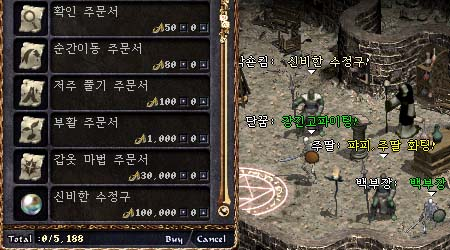

|
2002年12月4日
韓國正式伺服器一些發現
來源：Lineage Playforum (2)
英文翻譯：Lineage Compendium
1. 他們發現很多玩家用濫用/trade的指令去消除隱斗的時間遲緩，我們不知道這漏動會否出現在台灣或香港伺服器上，因此大家要小心。

2. 在正式伺服器，歐林開始售賣價值100,000的水晶球，相信這是法師30級任務的相關道具之一，但30級任務仍未加入。
韓國正式伺服器11月27日更新內容
來源：韓國天堂官方網站公告
英文翻譯：Lineage Compendium
韓國官方宣佈會在正式伺服器上加入古魯丁死鬥（無限之戰）格鬥場，與奇岩格鬥場的差不多，不過等級限制為25-45。
韓國測試伺服器11月27日更新內容
來源：韓國天堂官方網站公告
英文翻譯：Lineage Compendium
1. 修正了部分30級任務的錯誤。
2. 將肯特NPC們的位置移動少許。
3. 禁止將召喚怪物變身（以修正召喚師瞬間變紅的漏動）。
4. 加快妖精的召喚元素精靈的速度。
5. 旅館鑰匙必須退回相同的旅館。
6. 隱斗時間延遲由6秒改回4秒。
7. 戴上南瓜面具後會有5秒的時間延遲，同時在南瓜變身下是不能拾取任何道具。
韓國官方的魔法命中率公式有誤
我們在翻譯韓國官方網站上的魔法公式後，收到了不少測試資料反駁有關公式，因此我們亦做了一個粗略的測試。韓國官方所寫的弱化術命中率是：Min[(魔攻 + 額外的魔法點數) * 3% + 30%, 70%] - 目標魔防，在我們測試後（20智18魔攻法師，未扣除上限命中率為99%），發覺在83%及88%魔防下都仍有機會會中弱化術，而在93%下試了25次也沒有中，因此可見韓國官方的公式不太正確，我們估計那些魔法可能是沒有命中率上限，或是實際命中率上限比官方寫的為高，當然也可能是韓國伺服器與其他地區的分別。 |